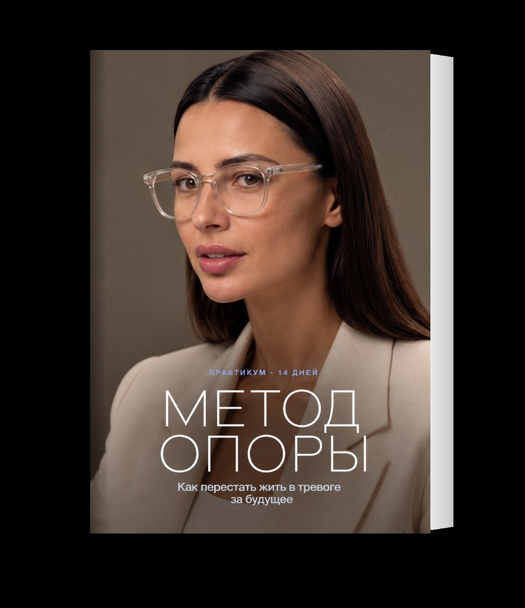

Бесплатный тест · 5 минут
Тест на жизненные схемыПочему вы раз за разом попадаете в одни и те же сценарии
Это адаптированный тест на ранние дезадаптивные схемы по методу Джеффри Янга — основателя схема-терапии. Схема — это глубинная установка о себе и мире, которая закладывается в детстве и потом неосознанно управляет вашими отношениями, самооценкой и решениями. Именно поэтому мы снова и снова наступаем на те же грабли, не понимая, почему.
Важно: это не диагноз, а зеркало. Тест помогает увидеть закономерность и понять, с чем стоит поработать — самостоятельно или со специалистом.
Ниже — 40 утверждений, сгруппированных по 10 схемам (по 4 на каждую). Читайте каждое и оценивайте, насколько оно про вас, по шкале от 1 до 6.
Отвечайте честно и по первому ощущению, не ищите «правильный» ответ. Баллы посчитаются автоматически.
Анализируем ваши ответы…
Уже видна закономерность
Собираем ваш разбор…
Ваш результат
Ваши ведущие схемы
Обратите внимание на 1–3 блока с самыми высокими баллами — это ваши ведущие схемы. Именно они чаще всего и создают «день сурка» в отношениях, самооценке и реализации.
Все 10 схем
4–11 — почти не выражена · 12–17 — заметна · 18–24 — выражена сильно
Что дальше
Схемы — это не приговор. Это привычные маршруты психики, которые когда-то помогли вам выжить. Их можно перепрошить — и тогда вы перестаёте ходить по кругу.
Хорошая новость: почти все эти схемы сводятся к одному — нехватке внутренней опоры. Когда опора появляется, чужой уход перестаёт пугать, критика не ранит, а любовь больше не нужно заслуживать.
Если вы узнали себя в одной-двух ведущих схемах — это уже половина пути. Второй шаг — научиться выращивать ту самую опору внутри.
Это не диагноз и не замена работе со специалистом. Если какая-то тема отозвалась особенно сильно и болезненно, бережно отнеситесь к себе и, по возможности, обратитесь к психологу.

Схему не стереть за две недели.Опору — можно собрать
Каждый день — короткий разбор и одно задание на 15 минут
Цена действует ещё 20:00
- ✓Четырнадцать дней по пятнадцать минут
- ✓Разовая оплата, без подписки
- ✓Начать можно сегодня
Что изменится
Первая неделя
- Увидите, в какие моменты включается ваша схема
- Станет понятно, какая тревога про сейчас, а какая — старая
- Увидите, сколько сил уходит на то, что от вас не зависит
Ко второй неделе
- Сможете сказать «мне нужно подумать» вместо автоматического «да»
- Перестанете брать на себя чужие чувства и ожидания
- Чужая оценка станет выбивать слабее и ненадолго
После
- У вас будет система опор, к которой можно возвращаться в плохой день
- Вы начнёте замечать свой сценарий раньше, чем он успеет сработать
Как устроена ОПОРА
Четыре шага, по одному на каждую часть. Свой ключевой шаг вы уже видели в результате, но держится он на предыдущих. Поэтому порядок имеет значение.
-
Дни 1–3
Назвать
Страх без названия занимает всё пространство. В первые три дня вы его называете — и он становится конечным.
-
Дни 4–7
Разделить
Часть будущего вы решаете, часть — нет. Круг контроля разделяет одно и другое, и тревога перестаёт тратиться впустую.
-
Дни 8–10
Защитить
Чужая тревога передаётся быстрее собственной. Здесь вы учитесь узнавать давление через страх и не брать его себе.
-
Дни 11–14
Опереться
Опора — это не настрой, а несколько конкретных вещей, которые работают в плохой день. Вы собираете свои и оставляете их себе.
К четырнадцатому дню это перестаёт быть упражнением и становится тем, как вы живёте.
Что вы получаете
PDF на сорок страниц. Четырнадцать дней: короткий разбор и одно задание на пятнадцать минут.
Список страхов, дневник эмоций, круг контроля, вечерние три строки, карта опор, письмо себе через год и три техники на случай, когда накрывает остро.
В двух версиях: цветная для экрана и упрощённая для чёрно-белой печати.
Файлы приходят на почту, указанную при оплате, и остаются у вас навсегда.
Если за неделю практикум вам не подойдёт, напишите на support@lanskaya.pro — вернём деньги полностью. Без объяснения причин.

Всё, что нужно, чтобы собрать свою опору
Разовая оплата · доступ навсегда
Цена действует ещё 20:00
- ✓Практикум на 14 дней
- ✓Девять практик
- ✓Рабочая тетрадь в двух версиях
- ✓Файлы на почту после оплаты